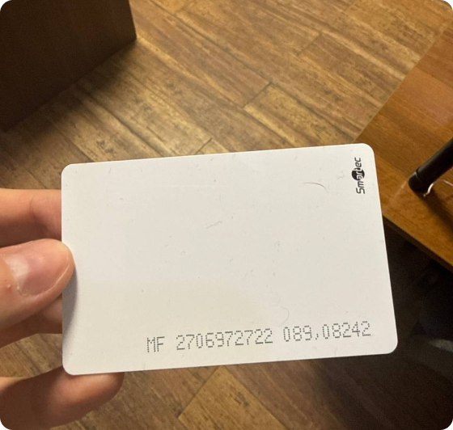

Карты лояльности для автомоечного IoT-сервиса — от идеи до запуска
CloudCore — IoT-платформа для моек самообслуживания. Я провела функцию карт лояльности от первой идеи до запуска: владельцы заказывают брендированные RFID-карты, активируют их прямо на терминале мойки и ведут всю программу — правила, балансы, аналитику — из приложения.
Мой вклад: исследование с владельцами и клиентами, продуктовая концепция, весь UI-дизайн и прототипирование.
Владельцам моек нечем удерживать клиентов — инструмента лояльности просто нет
Рынок моек самообслуживания растёт, конкуренция ужесточается. Владельцам нечем было стимулировать повторные визиты и выделяться среди конкурентов. При этом мы как платформа хотели повысить свою ценность для B2B-клиентов — не беря на себя логистику производства физических карт.
«Мне нужно, чтобы клиенты возвращались ко мне, а не ехали на соседнюю мойку».
«Хочу видеть, сколько накопил, — и получать что-то за то, что остаюсь».
Аудитория выбирает физические карты, а не удобство — это и задаёт формат
Анализ конкурентов и интервью с владельцами моек показали ясную картину: цифровые карты в Wallet удобны, но не работают для пёстрой аудитории моек самообслуживания. Клиенты сильно различаются по возрасту и цифровой грамотности, так что физические брендированные карты обязательны. При этом никто из конкурентов не предлагал встроенную лояльность на уровне IoT-платформы — для нас это была очевидная возможность.

Как подключать карты: три подхода, одно финальное решение
Самой сложной частью проекта стало подключение карт. Мы не производим их сами, поэтому проверить их данные привычными способами было нельзя.
Ручной ввод номеров картСлишком трудоёмко при большом объёме. Импорт таблицы закрывал проблему лишь отчасти — плохо масштабировался и был неудобен большинству владельцев.
Карты лояльности как часть платформы — без логистики на нашей сторонеВладельцы заказывают брендированные RFID-карты у сторонних поставщиков и активируют их прямо через терминал мойки. В приложении они настраивают правила лояльности, управляют балансами клиентов и следят за использованием карт в аналитике. Мы даём только программный слой — вся ответственность за карты остаётся у владельца, и операционных рисков у нас нет.
RFID-считыватель в терминале + режим подключения карт, с встроенными акциямиМы использовали встроенный RFID-считыватель платы терминала. Владелец включает в приложении специальный режим и прикладывает карты к терминалу — они автоматически добавляются в систему. Инструкция встроена прямо в интерфейс.


Бизнес-контекст важнее дизайнерской интуицииПрежде чем садиться за дизайн, важно провести границу между продуктом и клиентом. Решение с картами сложилось только после глубокого понимания бизнес-модели.
Железо определяет UXФизические ограничения — RFID и возможности терминала — подтолкнули к элегантному решению: использовать существующую инфраструктуру, а не создавать новую.
Баланс двух разных мышленийB2B- и B2C-пользователи думают о продукте принципиально по-разному. Работа в одиночку, без дизайн-команды, означала постоянное переключение контекста и проверку решений своими силами.